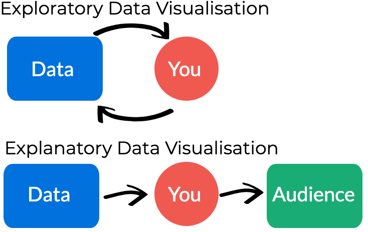
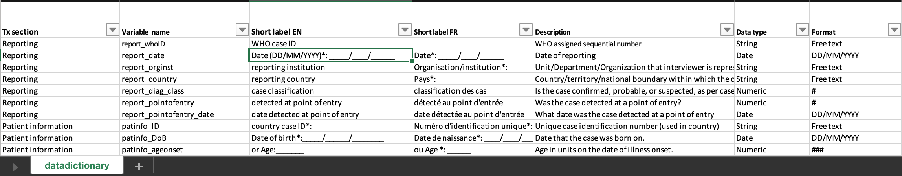

Quick Tips for Visualising Data
Examples from the COVID-19 Pandemic
Created by OCHA's Centre for Humanitarian Data / @humdata
Press right on your keyboard or swipe left to navigate.
The choices we make when we visualise data influence how people see, understand, and react to the underlying data.
This session includes a series of slides to build your knowledge, a set of five short videos to demonstrate creating a graph and a short quiz to test your knowledge. Expected length of time to complete all sessions: 25 minutes.
In this introductory session to visualising data, you will learn:
- best practices for designing responsible data visualisations.
- how to identify and visually represent different relationships in data.
- how to prepare and structure your data in order to make a simple line chart.
04: Choose the Right Visualisation
Why We Visualise Data
We Visualise to Explore & Explain
We visualise data to explore it. Through exploratory data visualisation we are able to uncover different relationships and to discover the most meaningful information to highlight or analyse further.
We also visualise data to explain what we are seeing in it. Explanatory visualisation can be used to inform, persuade and engage an audience. This is the type of visualisation we are going to focus on here.
Image inspired by Maarten Lambrechts
How to Explain with Visualisation
Explanatory data visualisation requires a defined audience and clear objective. Before you start to create your visualisation, ask yourself the following:
- What am I trying to say? The message that you are trying to convey should guide the design choices that you make.
- Who am I trying to say it to? Thinking about who your audience is and how they will interact with and use your visualisation will help focus your final product.
Understand the Data
Before you start, get to know your data
Before digging into a COVID-19 dataset, it is important to spend a bit of time understanding what can and cannot be said based on the data. Too often we jump into analysis before taking the time to understand what aspects of the world our data represents.
The first step is to understand the definitions of the data included in your dataset. To do this, you want to review the following:
- the metadata
- the data dictionary
Press down to learn more about metadata and data dictionaries
Explore the Metadata
Metadata is data about data. Reviewing the metadata before you download a new dataset can save you time and let you know whether the data you are about to download even has what you need. The Humanitarian Data Exchange requires all data shared on the platform to include a few essential metadata fields.

Click here to read more about HDX Metadata Press down to learn about data dictionaries.
Read the data dictionary
Some organisations will publish data dictionaries along with their data. The data dictionary provides definitions for each variable in the dataset and helps you to understand what can and cannot be said with the data.
Check out the WHO Case Based Reporting Data Dictionary
Common COVID-19 Data Points
The following are a few common figures in COVID-19 datasets:
- Active Cases includes the number of confirmed cases (and suspected cases where that is available) for a given timeframe minus those people who have died or recovered from COVID-19. (Also known as "prevalence").
- New Cases includes the number of confirmed cases (and suspected cases where that is available) for a given timeframe. (Also known as “incidence").
- Cumulative Cases are the total confirmed cases up to a given point in time, without subtracting people who have recovered or died. These numbers over time only get larger and larger as new cases are added.
Designing Responsibly
Design Considerations for Responsible Visualisations
The way we communicate about the COVID-19 pandemic has the potential to shape our audience's perception of risk and safety.
The design choices we make influence how our audience interprets our underlying data. This is because through our design we choose to emphasise certain aspects of the data while potentially obscuring others. While there are no hard and fast rules for making design choices, the following are a few considerations to think about when creating COVID-19 data visualisations.
Choose Colours Carefully
We associate red with danger. A map full of overlapping red circles will communicate danger and, as a result, may distract from other messages. Consider choosing neutral colours when creating COVID-19 visualisations.

Consider Using a Logarithmic Scale
Plotting exponential growth on a linear scale can obscure important details such as the rate of growth. In the example below, the U.S. and Italy look like they are on similar trajectories on the linear scale whereas it is more apparent on the logarithmic scale that COVID-19 cases are continuing to grow in the U.S. while Italy is seeing a slowdown.

Source: Kenneth Chang Press down to learn more.
Linear and Logarithmic Scales
The most common form of a line graph uses a linear scale. Along the Y axis, the numbers progress in a linear form – 1, 2, 3, or 10, 20, 30, etc.
On a logarithmic scale, numbers on the Y-axis don’t increase in equal increments. Each interval increases by a set factor – often 10 but could be a factor of 3 or 350 or 3,500, etc.
A logarithmic scale prevents large numbers from skewing a whole graph and is good for measuring rates of change, particularly rates of growth.
Know the Difference between Relative and Absolute Values
With the message you want to convey in mind, explore different ways to represent the data you are visualising. When comparing across countries or regions, consider how your visualisation will change based on your choice to use absolute numbers (total # of confirmed cases) versus relative numbers (# of confirmed cases per X thousand people).
In their purest sense an absolute value is a value compared to nothing, and a relative value is created when two absolute values are compared to each other. Relative values are often presented as percentages, proportions, rates, etc., and are good for providing a reference for readers to judge magnitude and to compare magnitude across different categories.
The choice to use one or the other depends on the message you are trying to convey.
Press down for examples
Using Relative COVID-19 Numbers
The choropleth map is an example of a visualisation that works best with relative numbers because they provide a common reference to compare magnitude across countries or regions.
Source: Our World in Data Press down to learn more.
Using Absolute COVID-19 Numbers
COVID-19 logarithmic line graphs often use absolute numbers, why? The emphasis when using a logarithmic scale is the exponential change over time, or trajectory, rather than the magnitude.

Communicate Uncertainty
There is a great deal of uncertainty around COVID-19, and this is present in the data. Try to find ways to convey that uncertainty in your visualisation. For example, adding the simple phrase ‘we know of X cases’ helps convey the critical message that the data we have is incomplete.

Source Lisa Charlotte Rost
Choose the Right Visualisation
Relationship Types
Choosing the right visualisation can feel overwhelming. There are a lot of options out there. The best way to narrow it down is to identify the relationship between the variables you want to highlight.
In this section, we will explore the following relationship types and discuss good chart options for each:
- Change Over Time
- Comparison
- Distribution
- Part-to-Whole
- Geospatial
Change Over Time
If you have time series data, a common relationship to visualise is change over time. Make sure to plot the timeline on the X-axis. The following charts are options to illustrate trends over time.
Source Andy Kriebel & The Financial Times Press down to learn more
Line Graph
A line graph will work for most time series data. Line charts are great for visualising trends, which is one reason they are a go-to choice for COVID-19 visualisations. Adding visual markers for important events, e.g. when stay at home orders went into effect, is an easy way to add context.

Source: Our World in Data Press down to see more examples
Bar Chart
Bar charts for time series work best when you want to make distinct points in time easy to recognize such as days, months or years, e.g. the number of confirmed cases reported daily.

Source: Worldometer Press down to see more examples
Stacked Area Graph
Stacked area graphs are useful for comparing multiple data series changing over time. The values of each series are displayed on top of each other, which allows you to visualise the change of the total value, e.g. the number of confirmed COVID-19 cases globally, and how the values are evolving in component groups, e.g. region.
Source: Our World in Data
Magnitude & Ranking
Visualisations will often use size, length and position to help viewers explore differences and similarities between categories and data series.
Source Andy Kriebel & The Financial Times Press down to learn more
Ordered Bar Chart
Ordered bar and column charts are excellent for showing position and for comparing, e.g., a list of COVID-19 cases by country. Fun fact: a 'bar chart' with vertical bars is called a column chart.

Source: Our World in Data on HDX
Distribution
Distribution visualisations are often used to explore data as they show the values in the dataset and how often they occur. The shape (or the skew) of a distribution can be a memorable way of highlighting the lack of uniformity or equality in the data.
Source Andy Kriebel & The Financial Times Press down to learn more
Histogram
Histograms are useful for understanding the spread of the data. They show where values are concentrated, what the extremes are and whether there are any gaps . They may look similar to a vertical bar chart but are different in an important way. The horizontal (x) axis is numerical, not categorical.

Source: Springer
Part-To-Whole
These charts are useful for showing how various parts of the data comprise the whole. While useful with a small number of categories they can quickly become difficult to read. If you are mainly interested in comparing the size of the parts, often a simple bar chart will be easier to read.
Source Andy Kriebel & The Financial Times Press down to learn more
Donut Charts
Over time, the donut chart has become increasingly popular. The donut chart is similar to a pie chart – but the centre can be a good way of making space to include more information about the data (e.g. total).

Source: OCHA Financial Tracking Services Press down to see more chart options.
Proportional Stacked Bar
The proportional stacked bar is another simple way of showing a part-to-whole relationship. This chart is especially good when comparing variables across groups or at different points in time.

Source:Eleonora Nazander
Geospatial
Use only when precise locations or geographical patterns in data are a crucial part of your message. When the interesting patterns in your data are not geographic patterns a map may end up distracting from your message. Just because it can be mapped, does not mean it must be mapped.
Source Andy Kriebel & The Financial Times Press down to learn more.
BASIC CHOROPLETH
This standard approach for putting data on a map, displays geographical areas that are coloured, shaded or patterned in relation to a data variable. It is often better to use rates rather than totals for this type of map.

Create your own Visualisation
Do it yourself
It’s time to create your own visualisation. You have learned why we create visualisations, some considerations to make when visualising COVID-19 data and how to use various charts to highlight and communicate different relationships.
In this final section, we'll walk through how to create a logarithmic line graph. Included in this is a downloadable step-by-step guide.
Create A Line Graph in Excel
Download our Step-By-Step Guide to Creating a Line Graph
- Download the data from HDX
- Prepare & structure your data
- Insert a line graph
- Explore using a logarithmic scale
- Customise the design
Press down to walk through the steps together.
Download data from HDX: Click on the video below to learn how to find and download data from the Humanitarian Data Exchange.
Press down for the next step.
Prepare & structure your data: Click on the video below to learn how to organise, filter and structure your data in order to create a line graph visualising the growth in COVID-19 cases.
Press down for the next step.
Insert a line graph: Next, watch the video below to learn how to insert a line graph as well as how to format the date axis in your chart.
Press down for the next step.
Explore using a logarithmic scale: Watch the video below to learn how to format your y-axis using a logarithmic scale.
Press down for the next step.
Customise the design: Now it’s time to customise the visualisation! Watch the video below to learn how to add text, change fonts and reduce clutter in your graph.
Additional Resources
- The Centre for Humanitarian Data's Data Literacy Page
- The resources in this lesson (videos, slides and step-by-step guide) are available for download and offline use in this google drive folder
- Amanda Makulec & Tableau's 10 considerations before you create another chart about COVID-19
- Data Wrapper's 17 (or so) Responsible lLive Visualizations about the Coronavirus, for you to use
- Vox.com's video on How coronavirus charts can mislead us
Glossary of Terms
- Incidence: The number of new cases of a health event (such as development of a disease, or reaction to a medicine) that occur during a specific time period, usually a year, in a specified population. Incidence is therefore also a measure of the risk of experiencing the health event during a certain period of time. European Patients' Academy
- Prevalence: Prevalence is the proportion of a population found to have a condition (typically a disease or a risk factor such as smoking). Prevalence can be measured at a particular point in time (point prevalence), or over a specified period such as a year (period prevalence). European Patients' Academy
- Time Series A series of data points ordered in time. Towards Data Science
- Data Dictionary: A data dictionary is used to catalog and communicate the structure and content of data, and provides meaningful descriptions for individually named data objects. Data Strategy for the Secretary-General for Action by Everyone, Everywhere & U.S. Geological Survey
- Metadata: Metadata is additional information or documentation about your dataset that will make it easier for others to understand and put your data into context. Centre for Humanitarian Data